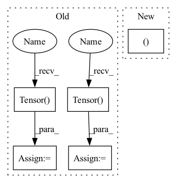

Pattern ID :37984
Before Change
self._k = k
if weight:
self.weight = nn.Parameter(th.Tensor( in_feats, out_feats) )
else:
self.register_parameter("weight", None)
if bias:
self.bias = nn.Parameter(th.Tensor( out_feats) )
else:
self.register_parameter("bias", None)
After Change
bias=True):
super().__init__()
if norm not in ("none", "both", "right", "left" ):
raise DGLError("Invalid norm value. Must be either "none", "both", "right" or "left"."
" But got "{}".".format(norm))
self._in_feats = in_feats
In pattern: SUPERPATTERN
Frequency: 5
Non-data size: 5
Instances Fragment ID: 108844318
Project Name: edisonleeeee/greatx
Commit Name: c43665fd30401c63acbd50175da1880509a52d21
Time: 2021-12-06
Author: cnljt@outlook.com
File Name: graphwar/nn/sgconv.py
M Class Name: SGConv
N Class Name: SGConv
M Method Name: __init__(9)
N Method Name: __init__(7)
M Parent Class: nn.Module
N Parent Class: nn.Module
M File Name: graphwar/nn/sgconv.py
N File Name: graphwar/nn/sgconv.py
M Start Line: 70
M End Line: 85
N Start Line: 90
N End Line: 108
Before Change
self._k = k
if weight:
self.weight = nn.Parameter(th.Tensor( in_feats, out_feats) )
else:
self.register_parameter("weight", None)
if bias:
self.bias = nn.Parameter(th.Tensor( out_feats) )
else:
self.register_parameter("bias", None)
After Change
bias=True):
super().__init__()
if norm not in ("none", "both", "right", "left" ):
raise DGLError("Invalid norm value. Must be either "none", "both", "right" or "left"."
" But got "{}".".format(norm))
self._in_feats = in_feats
Fragment ID: 108844287
Project Name: edisonleeeee/graphwar
Commit Name: c43665fd30401c63acbd50175da1880509a52d21
Time: 2021-12-06
Author: cnljt@outlook.com
File Name: graphwar/nn/sgconv.py
M Class Name: SGConv
N Class Name: SGConv
M Method Name: __init__(9)
N Method Name: __init__(7)
M Parent Class: nn.Module
N Parent Class: nn.Module
M File Name: graphwar/nn/sgconv.py
N File Name: graphwar/nn/sgconv.py
M Start Line: 70
M End Line: 85
N Start Line: 90
N End Line: 108
Before Change
im_w = 1024
self.im_height = im_h
self.im_width = im_w
self.scale = torch.Tensor( [im_w, im_h, im_w, im_h])
self.scale1 = torch.Tensor( [
im_w, im_h, im_w, im_h, im_w,
im_h, im_w, im_h, im_w, im_h
])
self.cfg = cfg
self.im_h = 1024
self.im_w = 1024After Change
priors = priorbox.forward()
self.prior_data = priors.data
self.mean = torch.Tensor((104.0, 117.0, 123.0 ))
def preprocess(self, img):
x = img.unsqueeze(0) Fragment ID: 108844319
Project Name: lihaoxiang1989/tensorrt-cv
Commit Name: defa136eb68db8c102bf6fd06339776e0a40d83e
Time: 2021-06-27
Author: hxl.colin@gmail.com
File Name: Retinaface/main.py
M Class Name: MyModel
N Class Name: MyModel
M Method Name: __init__(2)
N Method Name: __init__(2)
M Parent Class: nn.Module
N Parent Class: nn.Module
M File Name: Retinaface/main.py
N File Name: Retinaface/main.py
M Start Line: 177
M End Line: 198
N Start Line: 215
N End Line: 215
Before Change
grad_a = np.ones(a.shape) * grad_output.data
grad_b = np.ones(b.shape) * grad_output.data
grad_a = tensor.Tensor( unbroadcast(grad_a, a.shape))
grad_b = tensor.Tensor( unbroadcast(grad_b, b.shape))
return grad_a, grad_b
After Change
a, b = ctx.saved_tensors
if a.device == tensor.Device.CPU:
grad_a, grad_b = ops_cpu.add_backward(grad_output.data, a.shape, b.shape)
else:
grad_a, grad_b = ops_gpu.add_backward(ctx.cl_ctx, ctx.cl_queue, grad_output.data,
a.shape, b.shape) Fragment ID: 108844304
Project Name: pabannier/nanograd
Commit Name: cfa262ec2ccafd4370bf2dbe7e19f217ea54ab15
Time: 2021-01-17
Author: pierreantoine.bannier@gmail.com
File Name: nanograd/nn/functional.py
M Class Name: Add
N Class Name: Add
M Method Name: backward(2)
N Method Name: backward(2)
M Parent Class: Function
N Parent Class: Function
M File Name: nanograd/nn/functional.py
N File Name: nanograd/nn/functional.py
M Start Line: 313
M End Line: 319
N Start Line: 321
N End Line: 327